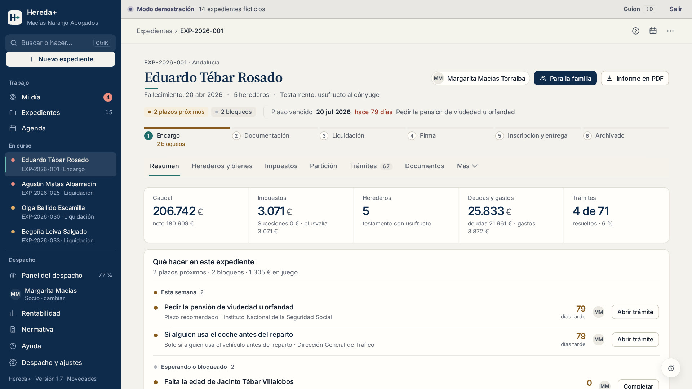
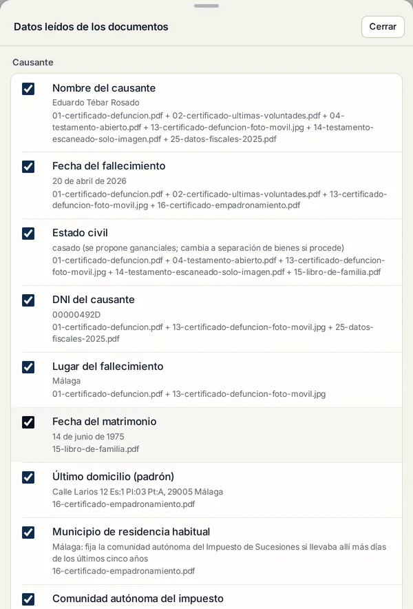
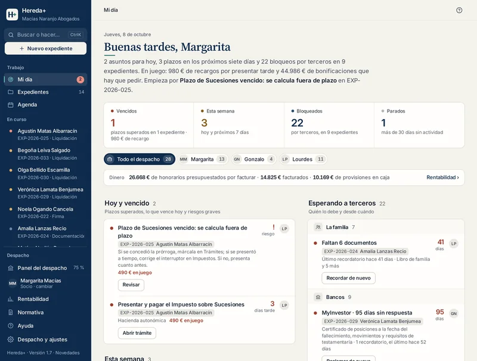

Software de sucesiones para despachos de abogados. Los documentos rellenan el expediente; el programa calcula Sucesiones y plusvalía y organiza los plazos. Nada sale del despacho.

Qué es
Hereda+ reúne en un sitio lo que hoy está repartido entre carpetas, Excel, Word, la web de Hacienda y la agenda: los datos de la herencia, los impuestos, los plazos, los escritos y el estado de cada expediente.
Del montón de papeles al expediente calculado, con los plazos y los escritos. Sin teclear lo que ya dicen los documentos.
Defunción, testamento, notas simples, Catastro, bancos, DNI. Cada dato propuesto dice de qué documento sale.
Los expedientes y los documentos se guardan y se leen en los equipos del despacho. No los recibimos.
La idea
Lo que antes era una tarde de teclear certificados, buscar la ordenanza del ayuntamiento y apuntar plazos en un Excel, ahora es revisar.
Cómo trabaja


Certificado de defunción · Últimas voluntades · Seguros de fallecimiento · Testamento · Acta de declaración de herederos · Libro de familia · Certificado de nacimiento · Certificado de matrimonio · Capitulaciones matrimoniales · Empadronamiento · DNI o NIE · Nota simple (también con varias fincas) · Certificación catastral urbana y rústica · Certificado de valor de referencia · Recibo del IBI · Escritura de compraventa · Escritura de herencia anterior · Certificado bancario de posiciones · Datos fiscales de la Agencia Tributaria · Certificado de valores · Plan de pensiones · Participaciones sociales · Póliza de seguro de vida · Préstamo o deuda · Contrato de arrendamiento · Permiso de circulación · Factura del funeral o de la última enfermedad · Modelos 650 y 660
Qué calcula
El motor de cálculo trabaja con reglas escritas. Cada paso enlaza a la ley de la comunidad, a la ordenanza del ayuntamiento o al artículo que lo sostiene, para poder explicarlo ante el cliente y ante la Administración.
Por heredero: base imponible, reducciones estatales y autonómicas, base liquidable, cuota, coeficiente y bonificaciones. Las 15 comunidades de régimen común, Navarra, Álava, Bizkaia, Gipuzkoa, Ceuta, Melilla y la norma estatal para no residentes.
Fuera de plazo, el recargo del artículo 27 de la Ley General Tributaria, en su línea.
Por inmueble, los dos métodos (objetivo y real) y se toma el menor. El tipo y la bonificación de la ordenanza en los municipios incorporados; el tipo oficial de las 48 capitales y de los municipios de más de 50.000 habitantes; en el resto, el máximo legal con un aviso.
TRLRHL, arts. 104 a 110Herencia testada e intestada, usufructo del cónyuge, legados, gananciales y separación de bienes. Control de legítimas del Código Civil y de los derechos civiles propios, y el coste de la segunda herencia.
Cuadro de adjudicaciones con excesos, lotes que reducen la plusvalía y el ahorro de cada opción en euros, con su riesgo. Las opciones de riesgo alto quedan «a valorar con el abogado».
Cuando falta un dato, el cálculo es prudente y lo dice. Por ejemplo, la plusvalía usa el método objetivo y nunca da «no sujeto» por falta de datos. Los resultados son estimaciones con la normativa cargada; el abogado los revisa antes de presentar. Si aparece un error de cálculo, se corrige y se avisa a los despachos afectados.
Cómo se instala
No hay servidor que montar ni programa que descargar. Hereda+ se abre en el navegador y se puede instalar como aplicación, con su icono y su ventana. Una vez abierto, funciona también sin conexión.
Cada persona usa su equipo con su perfil. Con «Despacho en red», todos los ordenadores trabajan con los mismos expedientes y documentos a través de una carpeta que el despacho ya tiene (OneDrive, Dropbox, Google Drive o el servidor de la oficina), cifrada si hay contraseña y sin pasar por nuestros servidores. Si dos personas cambian el mismo dato, se guardan las dos versiones y se elige. Requiere Chrome o Edge.
Hay además una versión en un único archivo que se abre con doble clic. En ella los documentos se archivan, pero la lectura automática necesita la versión web.
Seguridad y RGPD
El secreto profesional obliga a saber dónde están los expedientes y quién puede verlos. En Hereda+ la respuesta es corta: en los equipos del despacho, y solo el despacho.
Expedientes y documentos se guardan en el almacenamiento del navegador de cada equipo. La lectura de documentos (también el reconocimiento de texto de las fotos) se hace en el propio ordenador. No pasan por nuestros servidores y no podemos verlos.
Sin inteligencia artificial, sin analítica y sin servicios externos en tiempo de ejecución: las librerías de lectura de PDF y de reconocimiento de texto van dentro del programa.
Copia automática diaria en una carpeta del despacho, con los documentos, y copia descargable. Contraseña opcional que cifra los datos del navegador (AES-GCM de 256 bits, con la clave derivada de la contraseña).
Registro de cambios con quién cambió qué, cuándo, el valor anterior y el nuevo. Lo leído de documentos queda señalado y los documentos, «por revisar» hasta que se validan.
| Quién | Papel |
|---|---|
| El despacho | Responsable del tratamiento de los datos de sus clientes y de terceros que introduce en el programa. |
| Hereda+ (uso local) | No trata datos de los clientes del despacho por su cuenta: no es encargado del tratamiento (cláusula 8.2 de las condiciones). Solo trata los datos de contacto y facturación del propio despacho. Lo que se le envíe para una incidencia de soporte debe ir anonimizado (cláusula 8.6). |
| Funciones en la nube (futuras) | Solo si el despacho las activa. Antes se firma el contrato de encargo del tratamiento del artículo 28 del RGPD, con los subencargados y las medidas de seguridad (cláusula 9.2). |
Recomendaciones para el despacho: un perfil del navegador por persona, el disco del ordenador cifrado (BitLocker o FileVault), la contraseña de Hereda+ activada en portátiles y la carpeta de copias en una nube con acceso restringido.
Precios y contratación
Sin límite de expedientes. Las actualizaciones del programa y de la normativa y el soporte, incluidos. Solo cambia cuántas personas lo usan.
Oferta de lanzamiento · Plan Fundador
El plan Despacho (hasta 5 usuarios y puesta en marcha de 30 minutos) a precio fijo mientras la licencia siga activa. Para los 10 primeros despachos que lo soliciten hasta el 31 de diciembre de 2026 o hasta agotar plazas.
Precios sin IVA (21 %). Condiciones completas en heredate.github.io/condiciones.html. Los precios pueden cambiar con 60 días de preaviso y efecto en la siguiente renovación; el del Plan Fundador se mantiene en las condiciones de la página de contratación.
Soporte y siguiente paso
La mejor forma de saber si sirve es comparar sus cifras con las de un caso cerrado. Sin nombres ni DNI: basta con las fechas, los bienes y el parentesco.
La herencia, lista en una tarde.
Prueba: heredate.github.io/app
Contratación y contacto: heredate.github.io/contratar.html
Las capturas son del despacho de demostración y de documentos de ejemplo, con datos ficticios. Los cálculos son estimaciones con la normativa cargada y los revisa el abogado antes de presentar. Hereda+ no presenta declaraciones ni firma documentos.